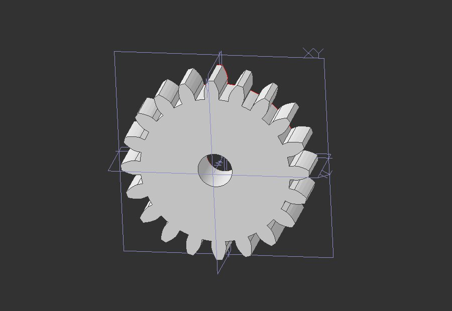

We are running the Windows version of Alibre Design on Linux through Wine, the open-source Windows compatibility layer. The desktop app now installs, activates, opens and edits parts, and renders 3D models on the GPU. It also runs unattended as a background service that converts and inspects CAD files on request.

A test part in Alibre Design's 3D viewport, rendered on Linux through Wine. Captured Nov 25, 2026.
Overall progress
Core modeling and automation work. Remaining work is in less common features, polish and packaging.
Desktop app workingBackground service workingSome features untestedPackaging planned
Progress by area
Installation and license activation
The official installer and activation work as on Windows.
User interface
Ribbon, design tree, dialogs and menus behave normally.
Part modeling and 3D view
Parts open with full solid geometry; sketching and features work. One editing issue after saving remains.
Automation and file conversion
Inspect parts, change dimensions, and export to common neutral CAD formats without a screen.
Server deployment
Runs as an always-on service on a small home-lab server, answering requests in seconds.
Add-ons
Bundled and third-party add-ons load; their commands still need a full test pass.
Drawings, printing and other workspaces
Not yet tested in depth.
Packaging for others
Planned: one setup script plus a ready-built compatibility layer.
Percentages are the project team's estimates, not measured test coverage.
How it fits together
Alibre Design stays unmodified. Wine translates its Windows calls to Linux, including the 3D graphics, which pass through standard open-source drivers to the GPU. A few compatibility fixes in Wine made this work, and we plan to offer them back to the Wine project.
Desktop app
Model as usual. Tested on a Linux desktop inside Windows and in a virtual machine.
Hidden app
The full program runs with no visible window, for scripted work that needs the real interface or add-ons.
Background service
Keeps the CAD engine loaded so file inspection and conversion jobs return in about a second instead of half a minute.
Milestones
Mid-October 2026Installed and activated; the interface and 3D view came up. First parts opened with full solid geometry after a compatibility fix.
Late October 2026Sketch mode, dimension labels and feature dialogs fixed. Confirmed in a second, independent Linux setup. Updated to the current Alibre release.
Late October 2026Screen-free automation: inspect parts, change dimensions, export to neutral CAD formats. Packaged as a container and deployed as an always-on service.
November 25, 2026Desktop app and automation re-verified for this report.
Working today
Install, license activation and updates
Opening and saving parts, assemblies and sheet metal
Sketching, the sketch solver and common features
GPU-rendered 3D view
Bundled and community add-ons load
Exports to STEP, IGES, SAT, Parasolid, STL and OBJ from scripts
Always-on conversion service on a small server
Next
Fix the remaining editing issue that appears after saving
Test drawings, printing and PDF output
Test add-on commands end to end
Try a standard Linux PC with no Windows underneath